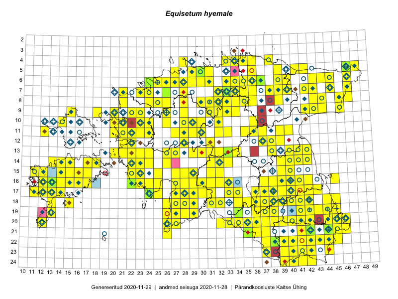

Equisetum hyemale
Uuendatud: 2016-12-01
Kaardile koondatud taksonid: Equisetum hyemale L.

Kaart põhineb 582 kirjel, neist vaatlusi 581 ja eksemplare 1.
Kuvatud viited 20 esimesele andmebaasikirjele, ülejäänud PlutoFis
- Thea Kull: 2015-04-27: 07-45: ala
- Thea Kull: 2015-04-27: 07-45: ala
- Thea Kull: 2015-04-27: 07-45: ala
- Thea Kull: 2015-06-02: 05-41: GPS punkt
- Tiit Hallikma, Toomas Kukk, Indrek Tammekänd: 2015-06-09: 12-28: ala
- Meeli Mesipuu, Kadri Tali: 2015-04-30: 17-40: ala
- Meeli Mesipuu, Kadri Tali: 2015-04-30: 17-40: GPS punkt
- Meeli Mesipuu, Kadri Tali: 2015-04-30: 17-40: GPS punkt
- Meeli Mesipuu, Liina Oja: 2015-04-27: 08-43: ala
- Meeli Mesipuu, Liina Oja: 2015-04-27: 08-43: GPS punkt
- Peedu Saar, Meeli Mesipuu: 2015-05-05: 16-37: GPS punkt
- Peedu Saar, Timo Luhamäe: 2015-05-09: 12-28: ala
- Peedu Saar, Timo Luhamäe: 2015-05-10: 12-31: ala
- Peedu Saar, Timo Luhamäe: 2015-05-10: 12-31: GPS punkt
- Peedu Saar, Timo Luhamäe: 2015-05-11: 12-37: ala
- Peedu Saar, Timo Luhamäe: 2015-05-11: 12-37: GPS punkt
- Peedu Saar, Timo Luhamäe: 2015-05-13: 06-39: ala
- Peedu Saar, Timo Luhamäe: 2015-05-13: 06-39: GPS punkt
- Peedu Saar, Timo Luhamäe: 2015-05-13: 06-40: ala
- Peedu Saar, Timo Luhamäe: 2015-05-13: 06-40: GPS punkt